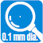
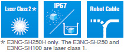

Retro-reflective Model
E3NC-LH03
Building Automation
Industrial Automation
Power Automation & Safety


Bangladesh Distributor
E3NC
Smart Laser Sensors
Ideal for Applications That Cannot Be Handled with Fiber Sensors or Photoelectric Sensors
about this Product Family
Related Contents
- Photoelectric Sensors
- Features
- Lineup
- Specifications
- Dimensions
- Application
- Catalog
last update: July 01, 2016
[Presence] E3NC-L series of Compact Laser Sensors
Stable Detection of Many Types of Workpieces, Even Transparent Ones
Detects Film That’s 95% Transparent
High-frequency Modulation for Stable Detection of Even Minor
Variations in the Thickness or Position of Transparent Objects
High-frequency Modulation
Conventional emitted laser beams have a single wavelength. With high-frequency Modulation, the emitted laser beam is controlled so that it contains multiple wavelengths.
Diffuse-reflective Model
E3NC-LH02
Long-distance and Variable Spot to Stably Detect the Target Workpiece
Adjust the Spot to the Workpiece or Application for Stable Detection.
Variable Spot
You can adjust the spot size to the workpiece size or sensing surface conditions for even more-stable detection. The use of a crown lock eliminates the need for tools to lock the spot adjuster. Just press in the adjuster to lock it to prevent the setting from changing.

Limited-reflective Model
E3NC-LH01
Minute Spot for High-precision Detection
[Detection] E3NC-S series of Ultra-compact CMOS Laser Sensors
E3NC-SH250H/SH250
E3NC-SH100

Stable Detection Even for Glossy Metals or Cast Metals Regardless of Workpiece Color, Material, or Surface Conditions
OMRON’s Unique HSDR-CMOS (High Speed and Dynamic Range)
Dynamic Range of Up to
500,000 Times
The shutter time of the CMOS is adjusted to the workpiece. And then the emission power is adjusted to optimize the amount of dispersed light that is received.
Stable Detection with Triangulation
With triangulation, the workpiece is measured by measuring the detection position on the position detection section, which receives the light. Therefore, the influence of changes in the incident level is limited.
Limited Influence of Inclination in Sensor Installation. More Ability to Handle Workpieces and Greater Flexibility in Installation
Even if the Sensor is mounted at an angle, the workpiece can still be detected due to the reduced mounting restrictions.
Inclined mounting at up to 60°
Accessories (Sold Separately) [Presence] E3NC-L series of Compact Laser Sensors
Lens Attachments
E39-P51 (For E3NC-LH03 Retro-reflective Models)
E39-P52 (For E3NC-LH02 Diffuse-reflective Models)
Handle Even More Applications with a Line Beam
Select the Line Beam Shape [PAT.P]
You can mount a Lens Attachment to the E3NC-LH02 and adjust the spot to create various shapes of line beams. Adjusting the beam shape to the workpiece enables even more-stable detection.
Rubber Packing
The Lens Attachments have internal rubber packings to reduce the entry of dirt between the Sensor Head and Lens Attachment.
[Presence] [Detection]
Laser Amplifier Units E3NC-LA
Laser Amplifier Units (CMOS Type) E3NC-SA
Consistent Operating Methods for All N-Smart Amplifier Units.
White Display Characters for High Visibility.
Select the Best Tuning Method According to the Application
Smart Tuning
[Common Functions *]
Basic Tuning
Two-point Tuning
The larger incident level between measurements with and without a workpiece is set to 9,999.
[Common Functions *]
High-speed Workpieces
Full Auto Tuning
You can adjust to moving workpieces without stopping the line.
[Additional E3NC-LA Functions]
High-precision Positioning
Position Tuning
High-precision, pinpoint workpiece positioning is possible.
* The common functions are provided by both the E3NC-LA and the E3NC-SA.
[Additional E3NC-LA Functions]
Long-term Stable Detection with Essentially No Maintenance Even When the Sensor Is Dirty
DPC (Dynamic Power Control)
Even if dirt or machine vibration reduces the amount of light received, OMRON’s unique DPC automatically compensates the displayed incident level to achieve stable, high-precision detection.
[Additional E3NC-SA Functions]
Stable Detection of Everything But the Background
Tuning without a Workpiece
The background is used as a reference to detect everything but the reference.The surface conditions or inclination of the workpiece do not influence detection, so stable detection is maintained without changing the settings even if the workpiece is changed.
Easy Adjustment after Head Installation
Easy-to-understand Distance Display (Approximation)
You can see the distance at a glance, which simplifies adjustment. After head installation, you can reduce adjustment time after line switchovers and reduce line stoppage time.
last update: July 01, 2016